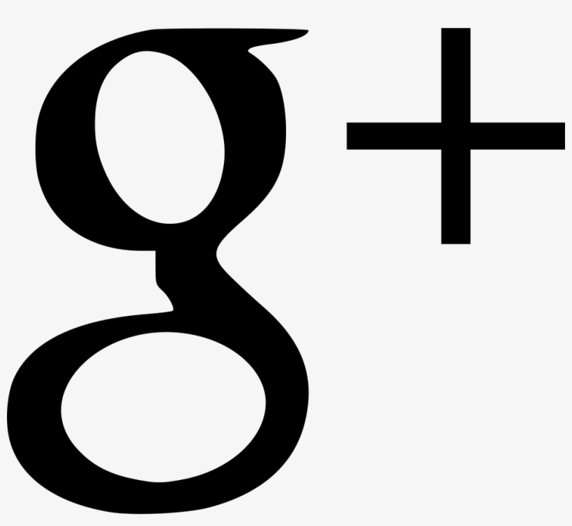

Panoramic
WordPress Demo Site
CALL US: 555.PANORAMIC


- 
WordPress Demo Site
CALL US: 555.PANORAMIC
The first release candidate for WordPress 5.6 is now available!
This is an important milestone in the community’s progress toward the final release of WordPress 5.6.
“Release Candidate” means that the new version is ready for release, but with millions of users and thousands of plugins and themes, it’s possible something was missed. WordPress 5.6 is slated for release on December 8, 2020, but we need your help to get there—if you haven’t tried 5.6 yet, now is the time!
You can test the WordPress 5.6 release candidate in following way:
Try the WordPress Beta Tester plugin (choose the “Bleeding edge” channel and Beta/RC Only” stream options) Or download the release candidate here (zip).
Thank you to all of the contributors who tested the Beta releases and gave feedback. Testing for bugs is a critical part of polishing every release and a great way to contribute to WordPress.
The final release of 2020 continues the annual tradition of a new default theme that is custom built to showcase the new features and functionality of the software. Continued progress on the block editor is especially clear in this release, which brings more blocks to more places, and fewer clicks to implement your layouts.
WordPress 5.6 also has lots of refinements to polish the developer experience. To learn more, subscribe to the Make WordPress Core blog and pay special attention to the developer notes tag for updates on those and other changes that could affect your products.
Please test your plugins and themes against WordPress 5.6 and update the Tested up to version in the readme file to 5.6. If you find compatibility problems, please be sure to post to the support forums, so those can be figured out before the final release.
The WordPress 5.6 Field Guide, due very shortly, will give you a more detailed dive into the major changes.
Do you speak a language other than English? Help us translate WordPress into more than 100 languages! This release also marks the hard string freeze point of the 5.6 release schedule.
If you think you’ve found a bug, you can post to the Alpha/Beta area in the support forums. We’d love to hear from you! If you’re comfortable writing a reproducible bug report, file one on WordPress Trac, where you can also find a list of known bugs.
Want to follow the code? There’s a development P2 blog and you can track active development in the Trac timeline that often has 20–30 updates per day.
Want to find an event near you? Check out the WordCamp schedule and find your local Meetup group!
For more WordPress news, check out the WordPress Planet.